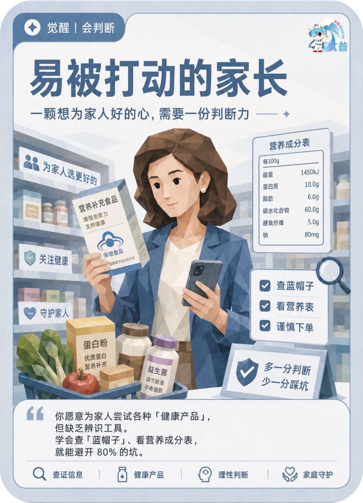

健康主理人
觉醒
会判断
F15
易被打动的家长
一颗想为家人好的心,需要一份判断力
你愿意为家人尝试各种「健康产品」,但缺乏辨识工具。学会查「蓝帽子」、看营养成分表,就能避开 80% 的坑。
手机端可点击“打开原图”后长按图片保存；也可以直接长按上方图卡保存。

一颗想为家人好的心,需要一份判断力
你愿意为家人尝试各种「健康产品」,但缺乏辨识工具。学会查「蓝帽子」、看营养成分表,就能避开 80% 的坑。
手机端可点击“打开原图”后长按图片保存；也可以直接长按上方图卡保存。